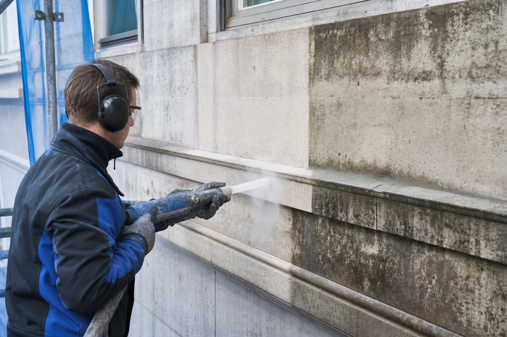

Trockeneis-Wissen · Fassade & Gebäude
Trockeneisstrahlen an der Fassade: Materialien und Technik im Detail

Nicht jede Fassade ist gleich, und nicht jedes Strahlverfahren passt zu jedem Material. Naturstein reagiert anders auf mechanische Belastung als Putz, Klinker anders als Sichtbeton. Wer Trockeneisstrahlen an Fassaden einsetzt, muss deshalb genau wissen, wie sich Druck, Düsentyp und Pelletgröße an den jeweiligen Untergrund anpassen lassen. In diesem Artikel geht es um die technische Seite: welche Materialien sich eignen, wie die Parameter eingestellt werden und warum Trockeneis gegenüber Wasser und Sand entscheidende Vorteile bei der Bausubstanz hat.
Welche Fassadenmaterialien lassen sich mit Trockeneis strahlen?
Trockeneisstrahlen ist an einer breiten Palette von Fassadenmaterialien einsetzbar. Dazu zählen Naturstein wie Sandstein, Kalkstein oder Granit, mineralischer und Kalkputz, Klinker, Sichtmauerwerk sowie Beton und Sichtbeton. Jedes dieser Materialien hat eine eigene Oberflächenstruktur, Porosität und Empfindlichkeit gegenüber mechanischer und thermischer Belastung. Naturstein etwa ist oft porös und kann Feuchtigkeit aufnehmen, während Klinker eine harte, gebrannte Oberfläche besitzt, die deutlich robuster ist. Putzoberflächen wiederum sind meist am empfindlichsten, da sie leicht absanden oder Risse bekommen können, wenn zu aggressiv gearbeitet wird.
Genau deshalb ist eine sorgfältige Materialanalyse vor Beginn der Arbeiten entscheidend. Wir prüfen vor Ort, wie tragfähig der Putz ist, ob Vorschäden wie Risse oder Ausblühungen vorliegen und welche Beschichtung entfernt werden soll. Erst danach wird die Strahltechnik festgelegt.
Wie werden Druck und Pelletgröße an das Material angepasst?
Der entscheidende technische Hebel beim Trockeneisstrahlen ist die Kombination aus Strahldruck, Düsengeometrie, Pelletgröße und Abstand zur Oberfläche. Bei robusten Materialien wie Klinker oder Beton kann mit höherem Druck und größeren Pellets gearbeitet werden, um hartnäckige Verschmutzungen wie Ruß oder alte Beschichtungen effizient zu lösen. Bei empfindlichem Naturstein oder historischem Putz reduzieren wir den Druck deutlich, verwenden feinere Pellets und arbeiten mit größerem Abstand und flacherem Auftreffwinkel, um die Oberflächenstruktur nicht anzugreifen.
Auch die Düsenform spielt eine Rolle: Flachstrahldüsen verteilen den Strahl breiter und gleichmäßiger, was sich für großflächige, robuste Fassadenbereiche eignet. Für filigrane Details wie Ornamente, Fugen oder Gesimse kommen schmalere, präzisere Düsen zum Einsatz. Diese Feinjustierung unterscheidet professionelles Trockeneisstrahlen von pauschalen Reinigungsverfahren, bei denen ein einziger Parameter für die gesamte Fläche verwendet wird.
So läuft das Trockeneisstrahlen an der Fassade ab
- 01Materialanalyse. Wir bestimmen den Fassadentyp, prüfen Vorschäden und legen fest, welche Beschichtung oder Verschmutzung entfernt werden soll.
- 02Parameter festlegen. Druck, Düse, Pelletgröße und Abstand werden speziell für das jeweilige Material eingestellt, oft mit einer Testfläche zur Kontrolle.
- 03Strahlvorgang. Die Fassade wird abschnittsweise gestrahlt, wobei Fenster, Türen und empfindliche Bauteile zuvor abgedeckt werden.
- 04Kontrolle und Übergabe. Die gereinigte Fläche wird auf Gleichmäßigkeit geprüft und ist sofort trocken und einsatzbereit.
Warum Trockeneisstrahlen kein Wasser in die Bausubstanz bringt
Ein zentraler technischer Vorteil des Trockeneisstrahlens liegt in der Sublimation der CO₂-Pellets: Sie gehen beim Aufprall direkt vom festen in den gasförmigen Zustand über, ohne dass Wasser im Spiel ist. Das unterscheidet das Verfahren fundamental von der klassischen Hochdruckreinigung mit Wasser, bei der Feuchtigkeit tief in poröse Materialien wie Naturstein, Kalkputz oder Fugenmörtel eindringen kann. Diese eingedrungene Feuchtigkeit ist bei niedrigen Temperaturen ein erhebliches Risiko: Gefriert das Wasser in den Poren, dehnt es sich aus und sprengt die Materialstruktur von innen. Dieser sogenannte Frost-Tau-Wechsel ist eine der häufigsten Ursachen für Rissbildung und Absanden an Fassaden.
Da beim Trockeneisstrahlen keine Feuchtigkeit eingebracht wird, entfällt dieses Risiko vollständig. Die Fassade bleibt trocken, ist unmittelbar nach der Reinigung wieder einsatzbereit und kann ohne lange Trocknungszeiten weiterbearbeitet, gestrichen oder versiegelt werden.
Warum Trockeneisstrahlen schonender ist als Sandstrahlen
Sandstrahlen zählt zu den abrasiven Verfahren: Das Strahlmittel trägt die Oberfläche mechanisch ab, was bei robusten Materialien funktioniert, bei empfindlichem Putz oder verwitterten Natursteinfassaden aber schnell zu irreversiblen Schäden führt. Die Oberfläche wird aufgeraut, Struktur und Patina gehen verloren, und poröse Materialien verlieren an Substanz. Trockeneisstrahlen dagegen wirkt nicht abrasiv. Die Pellets sublimieren beim Aufprall, sodass die Reinigungswirkung fast ausschließlich über den Kälteschock entsteht, nicht über mechanischen Abrieb. Das macht das Verfahren gerade für fragilen Putz, Stuckelemente oder historische Fassadenoberflächen zur deutlich sichereren Wahl.
Die Kunst beim Trockeneisstrahlen an Fassaden liegt nicht im Strahlen selbst, sondern in der richtigen Einstellung von Druck, Düse und Pelletgröße für jedes einzelne Material.
Vorteile im Überblick
- Materialgerecht: Druck und Pelletgröße werden individuell auf Naturstein, Putz, Klinker oder Beton abgestimmt.
- Kein Wassereintrag: Kein Risiko für Frost-Tau-Schäden oder Durchfeuchtung der Bausubstanz.
- Nicht abrasiv: Schont Oberflächenstruktur und Patina, im Gegensatz zu Sandstrahlen.
- Sofort trocken: Keine Trocknungszeit, sofortige Weiterbearbeitung möglich.
- Rückstandsfrei: Kein Strahlmittel, das aufwendig entsorgt werden müsste.
Vorbereitung und Nachsorge bei der Fassadenbehandlung
Vor jedem Einsatz prüfen wir Fenster, Türen und angrenzende Bauteile, die vor dem Strahlvorgang abgedeckt werden sollten, damit ausschließlich die zu reinigende Fläche behandelt wird. Nach der Reinigung ist die Fassade sofort trocken und ohne Wartezeit weiter bearbeitbar – ein klarer Vorteil, wenn im Anschluss gestrichen, verputzt oder eine Schutzimprägnierung aufgetragen werden soll.
Warum Powertech Performance aus Erfurt
Powertech Performance unter der Leitung von Geschäftsführer Benjamin Lemmer bringt genau das technische Know-how mit, das für materialgerechtes Trockeneisstrahlen an Fassaden notwendig ist. Wir begutachten jede Fassade individuell, wählen die passenden Strahlparameter und arbeiten im Umkreis von 100 Kilometern um Erfurt mobil direkt vor Ort. Egal ob Naturstein, Putz, Klinker oder Beton: Wir kennen die Besonderheiten jedes Materials und passen unsere Technik entsprechend an, damit deine Fassade sicher und schonend gereinigt wird.
Häufige Fragen zum Trockeneisstrahlen an Fassaden
Für welche Fassadenmaterialien eignet sich Trockeneisstrahlen?
Trockeneisstrahlen eignet sich für Naturstein, Putz, Klinker, Sichtmauerwerk und Beton. Druck, Düse und Pelletgröße werden für jedes Material individuell eingestellt, damit die Oberfläche geschont bleibt.
Warum ist Trockeneisstrahlen an der Fassade schonender als Sandstrahlen?
Trockeneispellets sublimieren beim Aufprall und wirken nicht abrasiv wie Sandstrahlmittel. Dadurch wird die Oberflächenstruktur von empfindlichem Putz oder historischem Mauerwerk nicht abgetragen, sondern nur der Schmutz gelöst.
Kann durch Trockeneisstrahlen Feuchtigkeit in die Fassade eindringen?
Nein. Da CO₂-Pellets sofort sublimieren, kommt kein Wasser zum Einsatz. Das Risiko von Frost-Tau-Schäden oder Durchfeuchtung, wie es bei Hochdruckreinigung mit Wasser besteht, entfällt komplett.